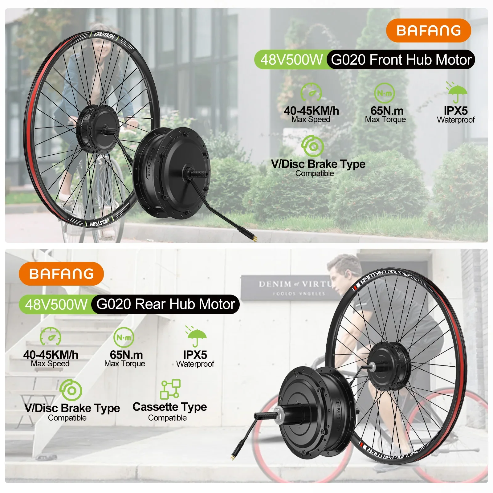
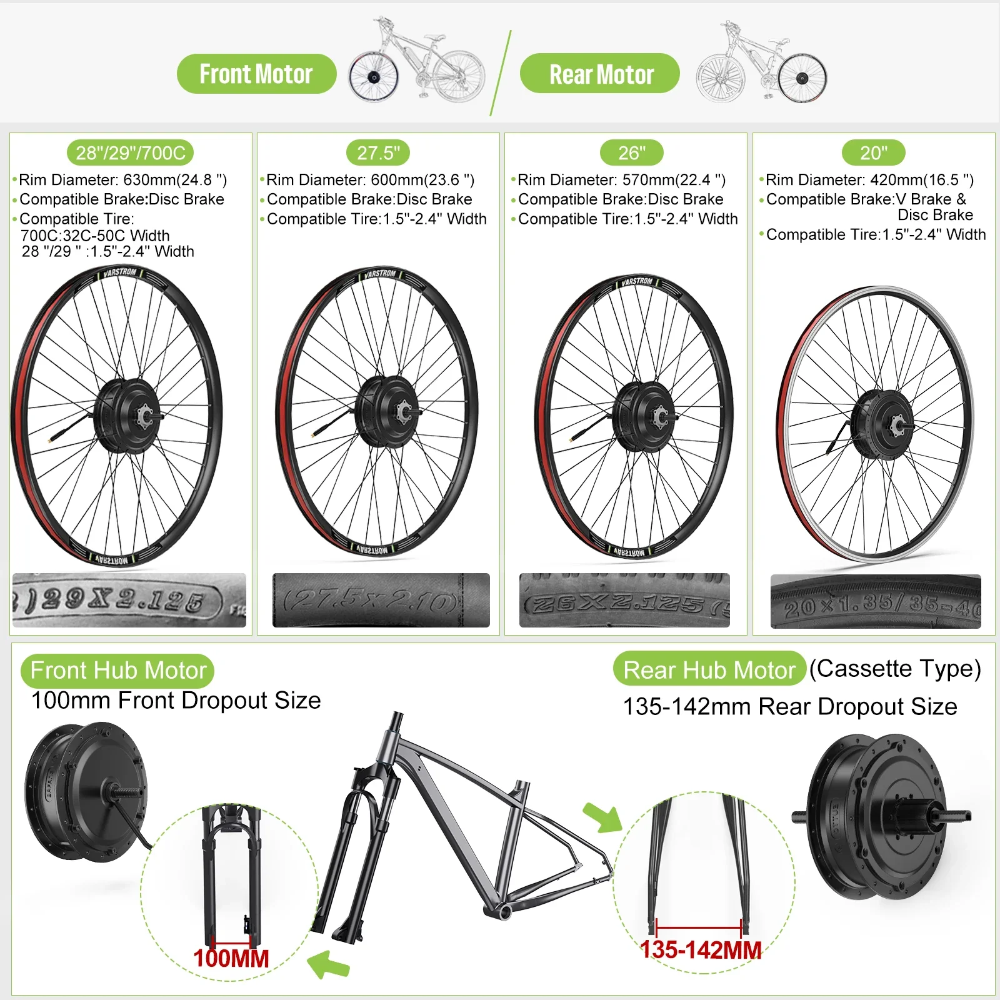
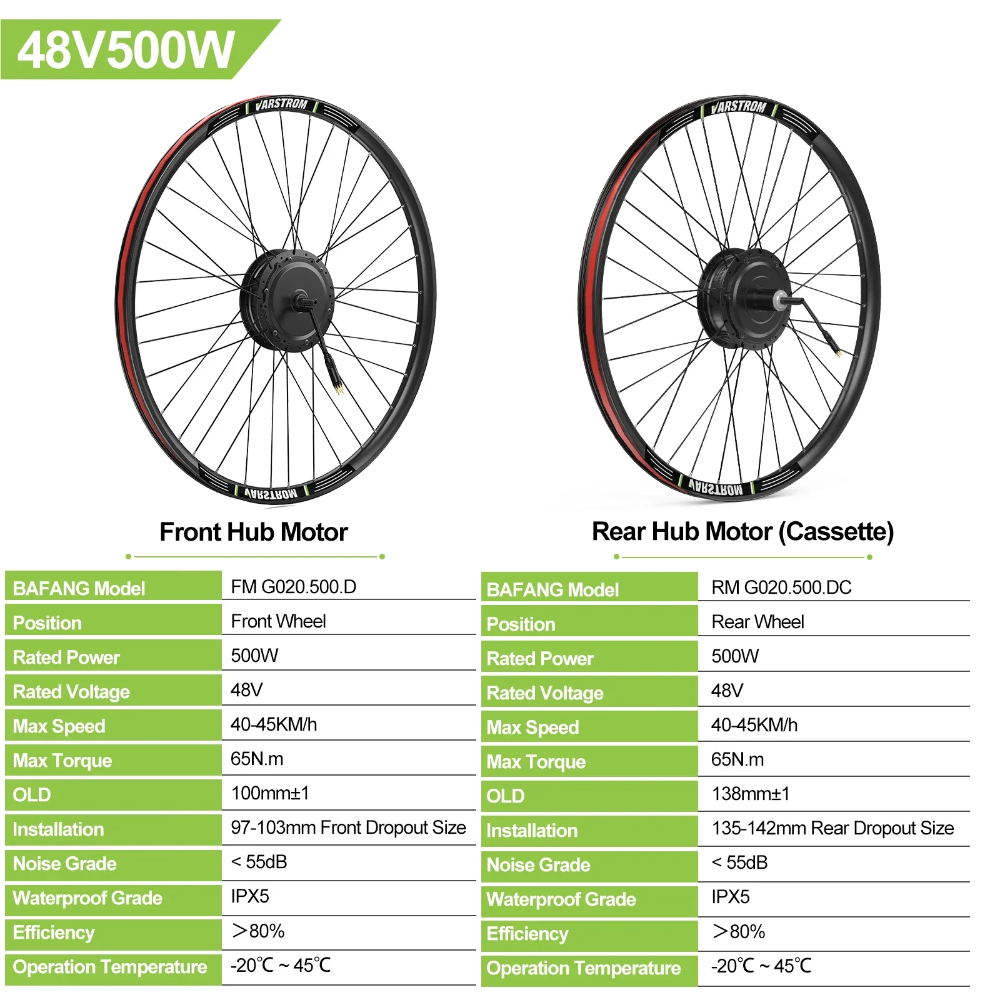
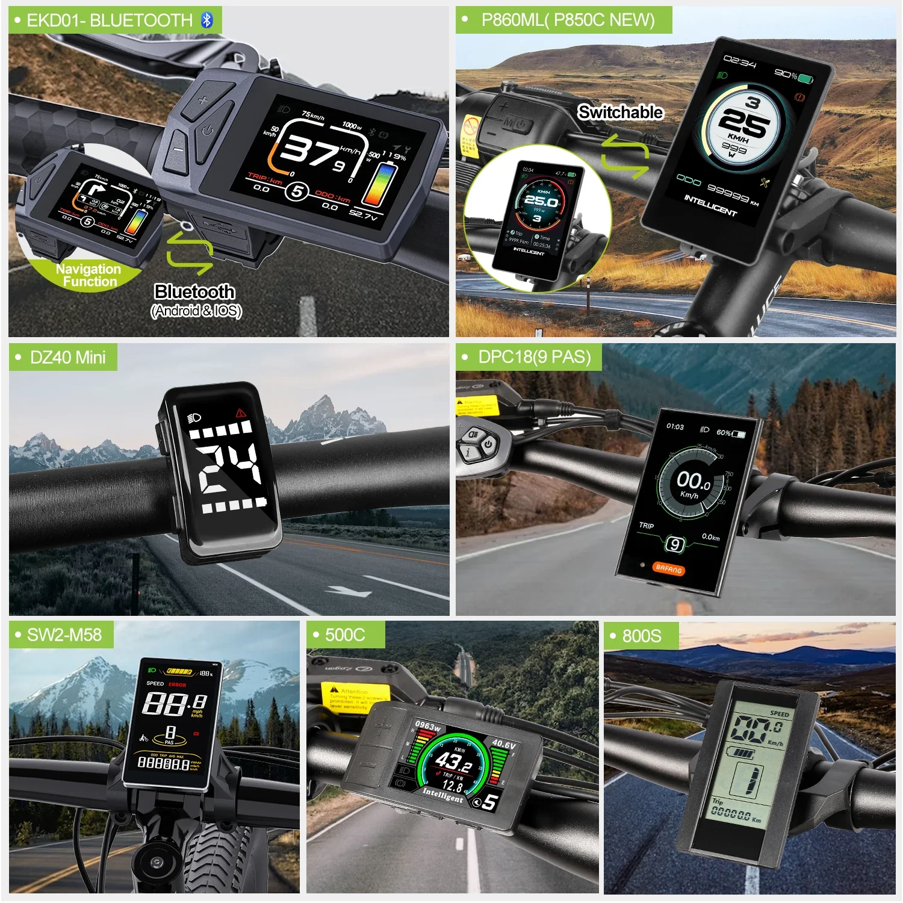
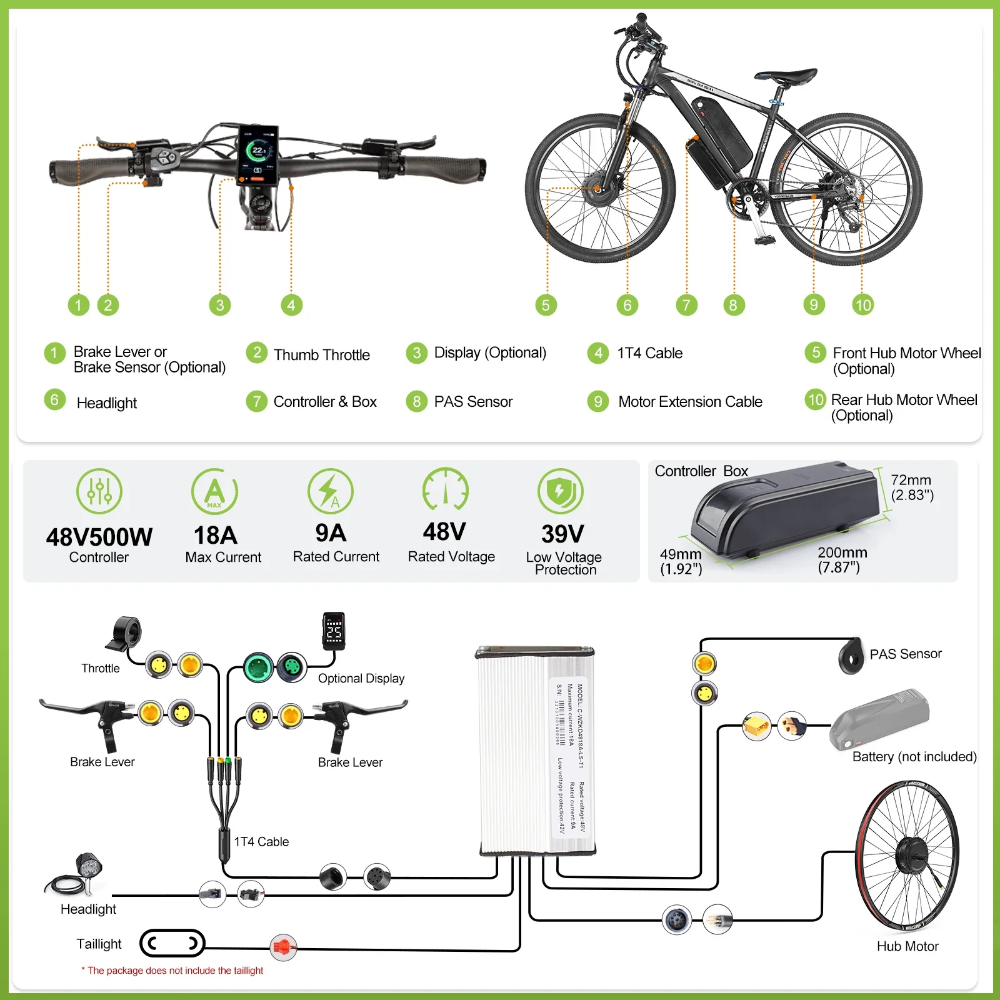
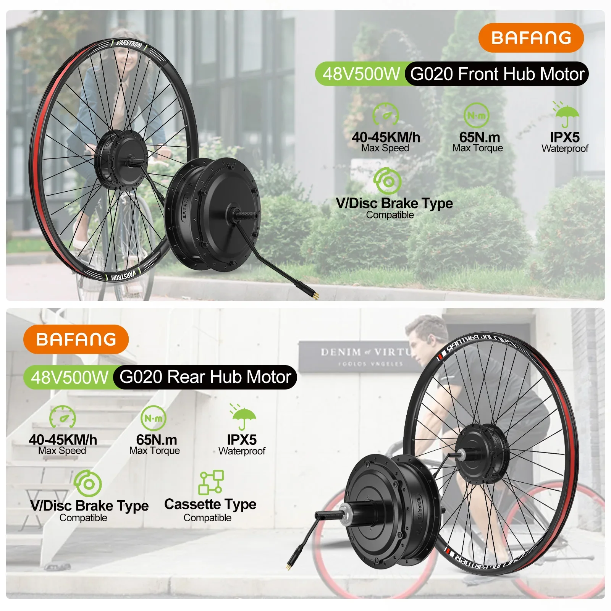
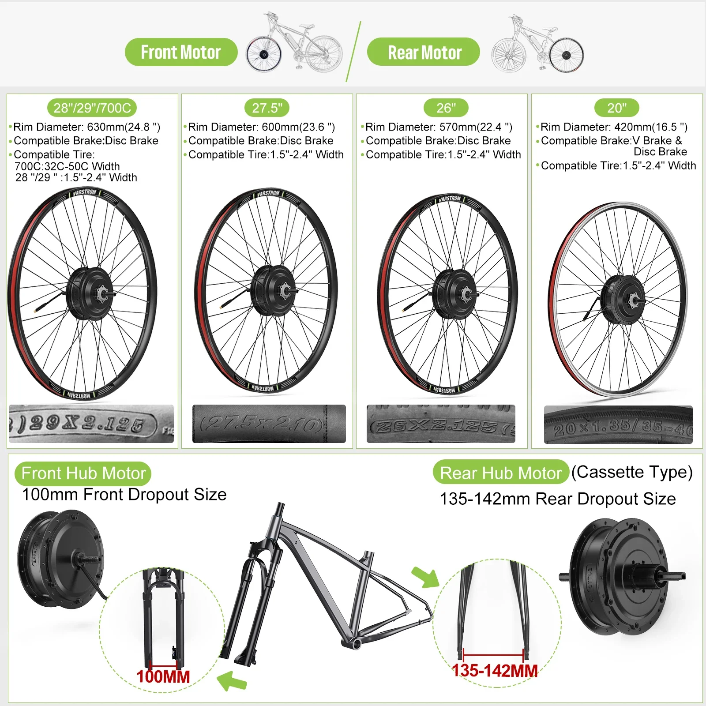
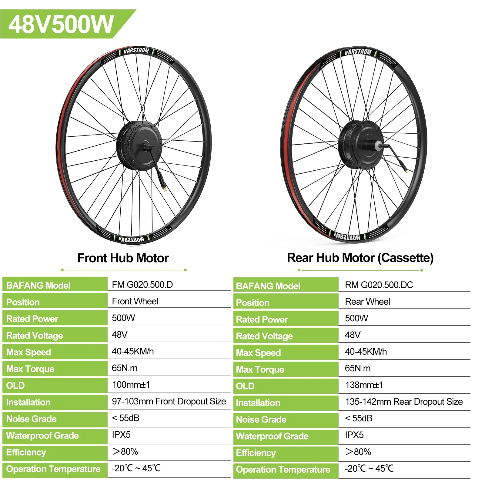
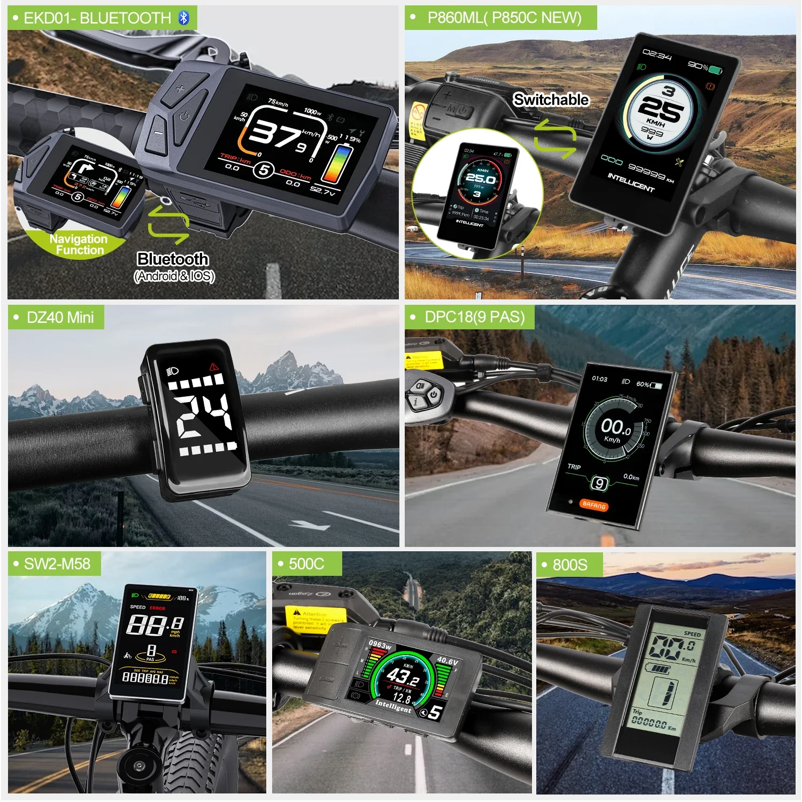
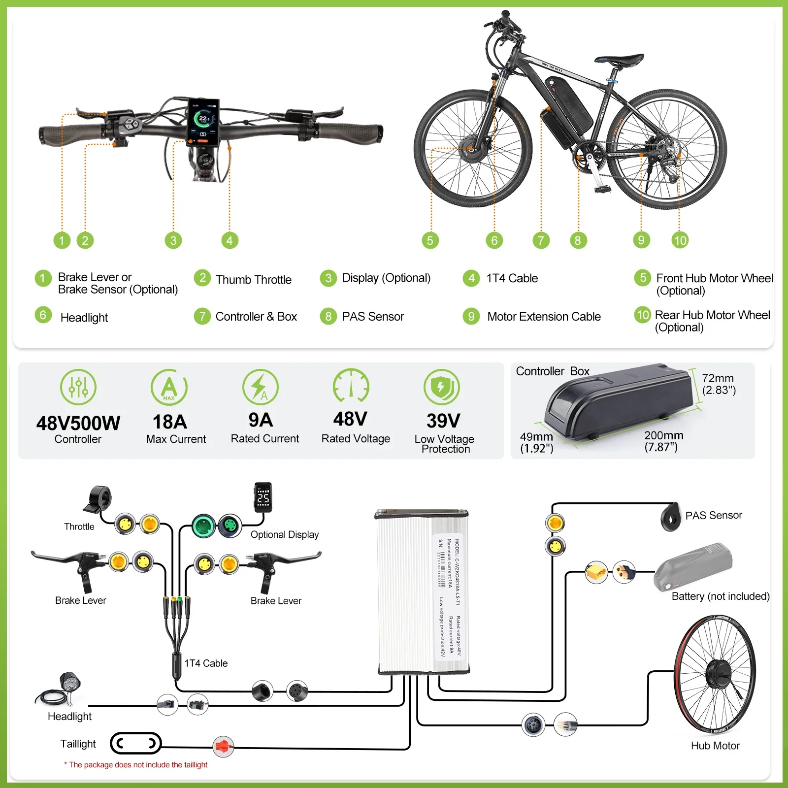

BAFANG 48V 500W motor s bezkartáčovým převodem, sada pro přestavbu elektrokola, pohon kol 20-29 palců / 700C
Probuďte v sobě cyklistu s přestavbovou sadou Bafang 48V 500W pro motor z předního/zadního náboje. Tato výkonná sada pro elektrokolo bez problémů promění jakékoli kolo s koly 20"-29" nebo 700C na vzrušující elektrokolo, které vám umožní snadno zdolávat kopce a užívat si delší jízdy.
Zažijte radost z tichého a plynulého výkonu díky bezkartáčovému převodovému motoru. Tato inovativní technologie poskytuje výjimečný točivý moment pro bezproblémovou akceleraci a stoupání, takže z každé jízdy uděláte dobrodružství.
Vyberte si konfiguraci s pohonem předních nebo zadních kol, která vyhovuje vašemu stylu jízdy. Sada Bafang se vyznačuje robustní konstrukcí navrženou pro odolnost a výkon. Užijte si svobodu dlouhých dobrodružství s touto výkonnou a všestrannou sadou pro přestavbu elektrokola.
- Bezkartáčový převodový motor: Poskytuje plynulý, tichý výkon a výjimečný točivý moment
- Možnosti pohonu předních nebo zadních kol: Přizpůsobitelné vašemu stylu jízdy
- Kompatibilní s koly: Kola 20"-29" nebo 700C
Pozdvihněte svůj cyklistický zážitek ještě dnes s přestavbovou sadou Bafang 48V 500W, kde se dobrodružství setkává s lehkostí a výkonem.
Tato sada pro přestavbu elektrokola Bafang nabízí výkonný a efektivní způsob, jak přeměnit vaše kolo na elektrokolo. Díky robustnímu bezkartáčovému převodovému motoru 48 V a 500 W nabízí plynulou akceleraci a působivý stoupavý výkon.
- Bezkartáčový převodový motor: Zajišťuje tichý provoz a vysoký točivý moment pro snadné šlapání.
- Napětí systému 48 V: Poskytuje dostatek výkonu pro zdolávání kopců a jízdu vyššími rychlostmi.
- Výstupní výkon 500 W: Umožňuje rychlou akceleraci a silný výkon, vhodný pro různé terény.
- Možnost předního nebo zadního nábojového motoru: Vyberte si konfiguraci, která nejlépe vyhovuje rámu a stylu jízdy vašeho kola.
Sada pro přestavbu elektrokola Bafang je navržena tak, aby vyhovovala široké škále jízdních kol.
- Kompatibilita velikosti kol: 20-29 palců, včetně kol 700C.
- Typ motoru: Bezkartáčový
- Napětí: 48 V
- Výkon: 500 W
Tato sada pro přestavbu nabízí řadu výhod pro cyklisty, kteří hledají efektivnější a příjemnější zážitek z jízdy.
- Snadné zdolávání kopců: Výkonný motor bez námahy zdolává stoupání, což usnadňuje jízdu na kole.
- Zvýšený dojezd: Prodlužte dojezdovou vzdálenost s přidaným posilovačem.
- Vylepšená rychlost: Dosáhněte vyšších rychlostí pro rychlejší dojíždění nebo rekreační jízdy.
- Ekologická varianta: Snižte svou závislost na vozidlech na benzínový pohon a přispějte k ekologičtějšímu životnímu prostředí.
Chcete-li použít sadu pro přestavbu elektrokola Bafang, postupujte podle těchto jednoduchých pokynů kroky:
- Nainstalujte motor na přední nebo zadní náboj vašeho jízdního kola.
- Připojte baterii a kabelový svazek podle pokynů.
- Upravte nastavení plynu a asistence šlapání podle svých preferencí.
- Užijte si své proměněné elektrokolo!
Nezapomeňte si přečíst uživatelskou příručku, kde najdete podrobné pokyny k instalaci a provozu.